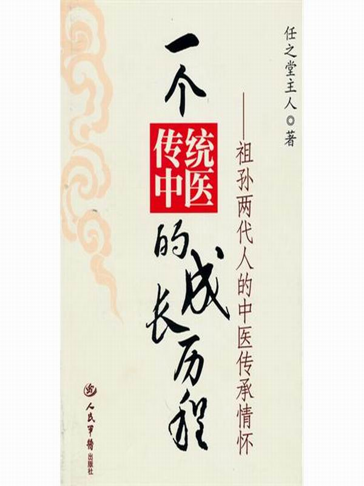

一个传统中医的成长历程:祖孙两代人的中医传承情怀
任之堂主人
previous page
next page

Table of contents
封面
前言
一、童年的回忆（上）
二、童年的回忆（中）
三、童年的回忆（下）
四、太爷教我学阴阳
五、太爷教我学诊脉（上）
六、太爷教我学诊脉（中）
七、太爷教我学诊脉（下）
八、太爷教我学望诊
九、太爷教我学五行
十、太爷带我上临床（上）
十一、太爷带我上临床（中）
十二、太爷带我上临床（下）
十三、太爷的逝世
十四、少年的中医感悟
十五、中医路之探索篇
十六、中医路之社会调查篇
十七、中医路之静悟篇
十八、中医路之见习篇
十九、中医路之中药篇
二十、中医路之实习篇（上）
二十一、中医路之实习篇（下）
二十二、中医路之彷徨篇
二十三、中医路之游历篇
二十四、中医路之下海篇
二十五、中医路之创业篇
二十六、中医路之成长篇
二十七、中医路之伤痛篇
二十八、中医路之提高篇
二十九、中医路之太极篇（上）
三十、中医路之太极篇（下）
三十一、中医路之感悟篇
三十二、中医路之挑战篇
三十三、中医路之亮剑篇（上）
三十四、中医路之亮剑篇（下）
previous page
start
next page